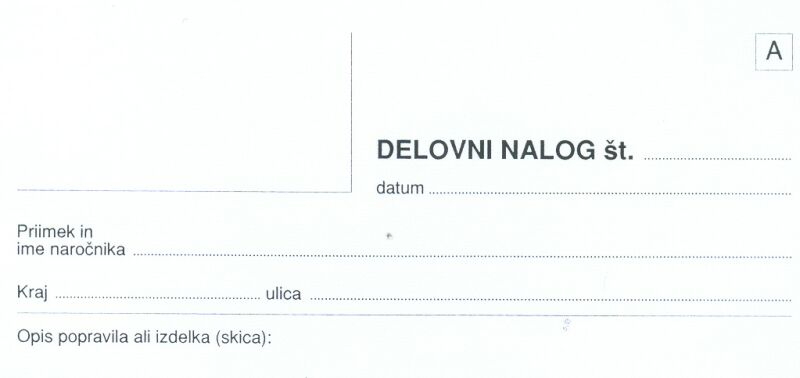
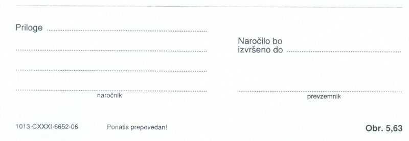

|
Organizacije so urejene združbe ali skupine ljudi, oblikovane zato, da skupaj lažje dosegajo zastavljene cilje. Vse dejavnosti organizacije so torej dobro premišljene, naèrtovane in usklajene. Eden od pomembnih ciljev organizacije je uèinkovitost doseganja ciljev. Uèinkovitost pomeni doseganje zastavljenih ciljev ob èim manjši izrabi virov. Viri organizacije so: èas njenih èlanov, vse sposobnosti in ostale lastnosti njenih èlanov, energija (elektrièna, ogrevanje, fosilna goriva,..), denarna sredstva, materialna sredstva. Zaradi vsega tega je priporoèljivo, da izvaja organizacija dela, opravila in postopke za doseganje ciljev na urejen in premišljen naèin. Posamezne naloge, ki jih izvajajo èlani organizacije, morajo biti zato temeljito zabeležene in dokumentirane. Dokument, s katerim beležimo in dokumentiramo delovna opravila èlanov organizacije, se imenuje delovni nalog. Primer: Naroènik želi, da neka organizacija opravi zanj želeno delo ali storitev. Denimo, da želi zamenjati vsa okna v svojem stanovanju. Naroènik se obrne na organizacijo, ki opravlja tako dejavnost. Naroènik svojo željo opiše uslužbencem te organizacije, ki so zadolženi za sprejem takih naroèil. Ti posredujejo zadevo odgovornim za organizacijo dela. Naroèeno delo nato zabeležijo oziroma dokumentirajo v obliki delovnega naloga za izvajalce tega dela. Oglejmo si nekaj podatkov v splošnem delovnem nalogu: 1. Številka delovnega naloga - obièajno gre za vrstno številko, po kateri razvršèamo in razlikujemo delovne naloge med seboj. 2. Priimek in ime naroènika - gre za osebo, ki je naroèila delo. 3. Kraj in ulica - podatki o kraju naroènika oziroma izvajanja del. 4. Opis popravila ali izdelka - opis dela. 5. Priloge - popis morebitne spremljevalne tehniène ali druge potrebne dokumentacije. 6. Naroèilo bo izvršeno do - rok izvedbe dela, popravila ali dela. 7. Naroènik - podpis naroènika. 8. Prevzemnik - oseba, ki je prevzela naroèilo. Najpogosteje je skladišèe tista organizacijska enota, ki izdaja material ostalim enotam.  Slika 1: Glava splošnega obrazca za delovni nalog.  Slika 2: Noga splošnega obrazca za delovni nalog. 1. Vprašanja za usmerjanje pozornosti in usvajanje novih besed: 1. Kako se imenuje obrazec, s pomoèjo katerega organizacija beleži in dokumentira dela, opravila ter storitve? 2. Naštej podatke, ki jih vsebuje delovni nalog. 3. Kakšno delo želi naroènik v primeru iz besedila? 4. Na sliki te uène enote poskusi ugotoviti, kdo izdaja obrazce za delovne naloge? 5. Na sliki te uène enote poskusi ugotoviti številko oziroma oznako obrazca delovnih nalogov? 6. Kakšna je tipska oznaka obrazca za delovni nalog, ki smo ga spoznali v tej uèni enoti? 2. Zapiši od ene do pet kljuènih besed, ki povzemajo vsebino te uène enote. 3. Vprašanja za razmislek, ponavljanje in povezovanje z lastno izkušnjo: 4. Domaèa naloga: V enem do petih stavkih zapiši, kaj ti je v tej uèni enoti najbolj ostalo v spominu. |